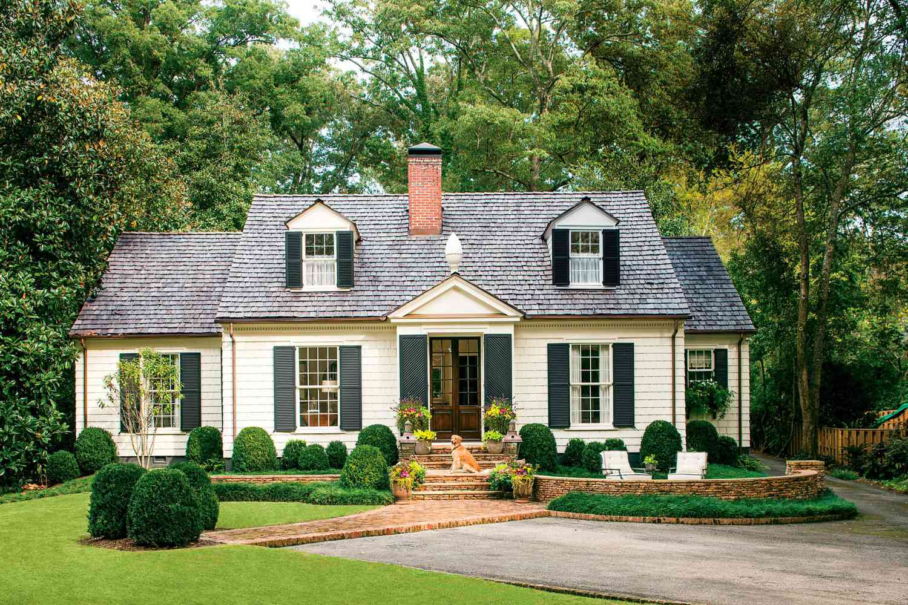
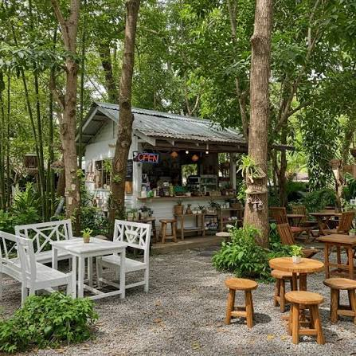
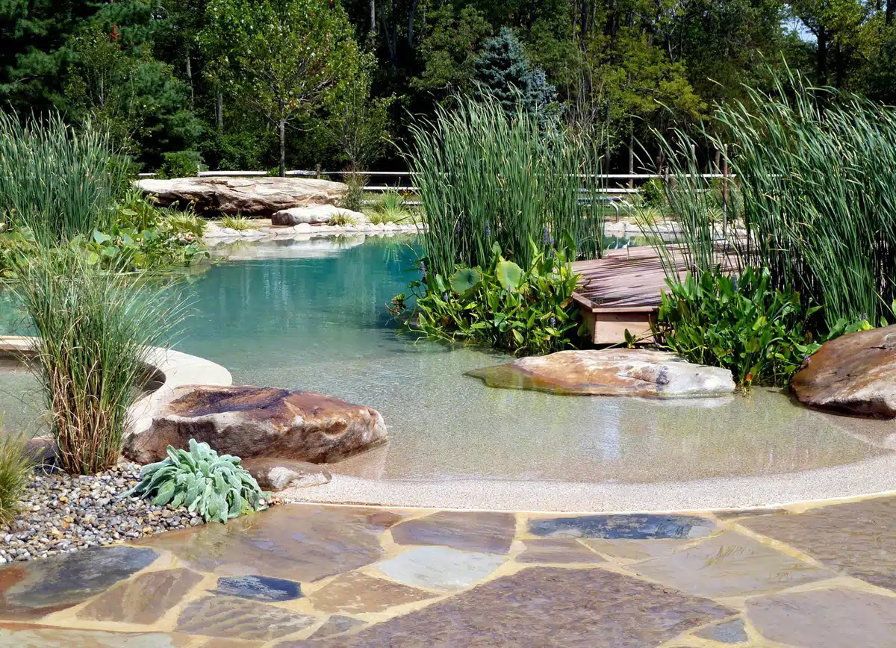
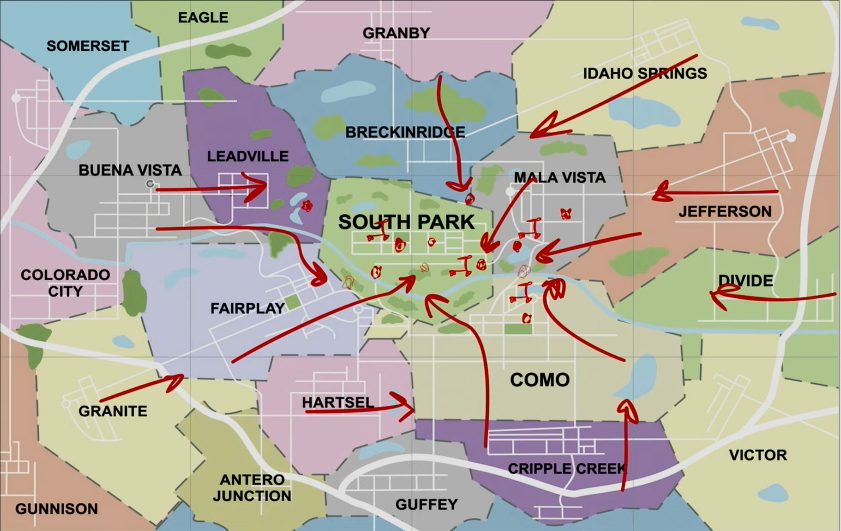

«Південний Парк» — простір для життя, у якому хочеться залишатися. Це сучасне котеджне містечко, створене для тих, хто цінує комфорт, приватність і спокій заміського життя. Тут можна відпочити від міського ритму, бути ближче до природи та водночас мати все необхідне для зручного повсякденного життя. Концепція «Південного Парку» побудована навколо відчуття власного простору. Продумане планування території, сучасна архітектура та затишне оточення формують середовище, де комфортно жити щодня, проводити час із родиною, працювати, відпочивати та зустрічати друзів. «Південний Парк» — це більше, ніж будинок за містом. Це власний простір, власний ритм і нова якість життя. Тут починається дім, у якому добре жити.
Фотоальбом

Котеджі!

Кав'ярні!

Басейни!
Розташування

Соціальні програми
Наше містечко створене для комфортного та безпечного життя всієї родини. Ми прагнемо розвивати не лише житловий простір, а й дружню спільноту, у якій кожен мешканець почуватиметься затишно. Для жителів передбачені програми підтримки молодих сімей, спеціальні умови для військовослужбовців та ветеранів, а також можливість участі у спільних екологічних і благодійних ініціативах. На території містечка планується облаштування дитячих і спортивних майданчиків, зелених зон для відпочинку та місць для проведення спільних заходів. Особлива увага приділяється доступності, безпеці та створенню комфортного середовища для людей різного віку.